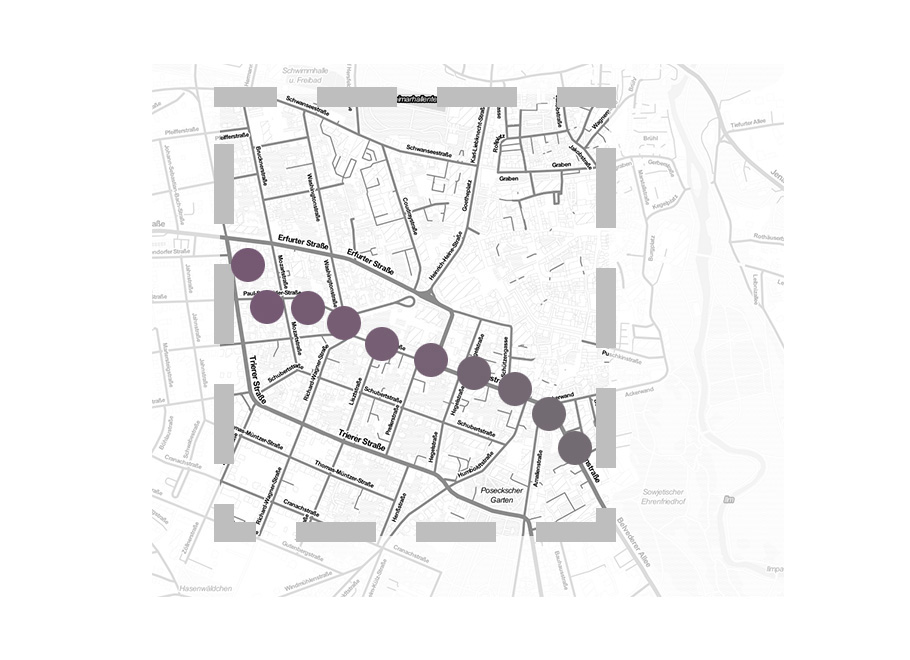

Friend Connection
An application that translates the combination of two locations, that of a beloved one and yours, into a single colour. Updating with every location update.
The simple layout gives space for thoughts about what it means to be ‚in a place‘ nowadays. And how relations and contacts change with other ways of connectivity and the available information.
Launched as an app running on the webbrowser, I am now updating it into a iOS/Android supported program.
Documentation
